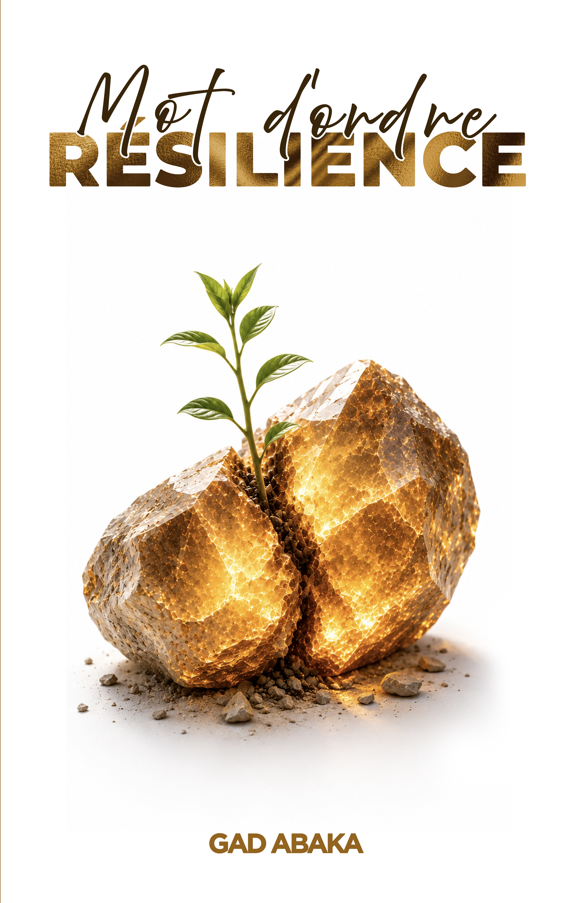

Gad Abaka
Des mots pour inspirer,fortifier et transformer.
Découvrez l'univers de Gad Abaka, ses ouvrages, ses réflexions
et des messages qui nourrissent la foi,l'espérance et la résilience.


Découvrez l'univers de Gad Abaka, ses ouvrages, ses réflexions
et des messages qui nourrissent la foi,l'espérance et la résilience.

Découvrez Gad Abaka, un auteur passionné par les mots, la foi et la transformation des vies. À travers ses écrits, il partage des réflexions profondes sur l'espérance, la persévérance et la résilience. Son objectif est d'inspirer, de fortifier et d'encourager chaque lecteur à avancer malgré les défis de la vie.
Découvrez les ouvrages de Gad Abaka
Découvrez un ouvrage qui invite à la réflexion sur les relations humaines.
Découvrir le livre →
Un ouvrage sur la force de continuer, l'espérance et la persévérance.
Découvrir le livre →Une question concernant un ouvrage, une invitation ou une demande de collaboration ? N'hésitez pas à nous contacter.